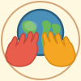
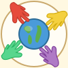
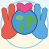

Supportive

Full Size
Medium
Favicon
Version 1: Supporting Hands
Two realistic child handprints holding up a detailed globe with recognizable continents. The hands reach up to support the world.
Realistic hands
Detailed continents
Supportive gesture
Community

Full Size
Medium
Favicon
Version 2: Reaching Together
Four detailed handprints in rainbow colors reaching toward the globe from each corner — community coming together from all directions.
Four hands
Rainbow colors
Dynamic composition
Connection

Full Size
Medium
Favicon
Version 3: Painted Globe
Handprints stamped directly ON the globe's surface — like children dipped their hands in paint and pressed them onto Earth! Large globe with detailed geography.
Paint stamp effect
Large globe
Personal touch
Unity

Full Size
Medium
Favicon
Version 4: Circle of Hands
Six realistic child handprints forming a protective rainbow ring around the centered globe. Unity, diversity, and protection.
Six hands
Rainbow spectrum
Protective circle
Love

Full Size
Medium
Favicon
Version 5: Cradled with Love
Two hands gently cradling the world from below, with a heart above. Warm and nurturing — symbolizing the love and care for special needs children.
Cradling gesture
Heart symbol
Nurturing